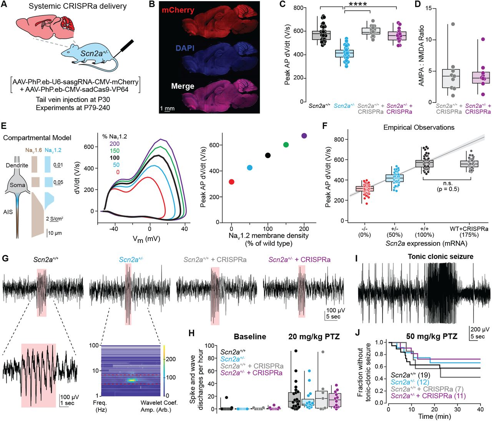
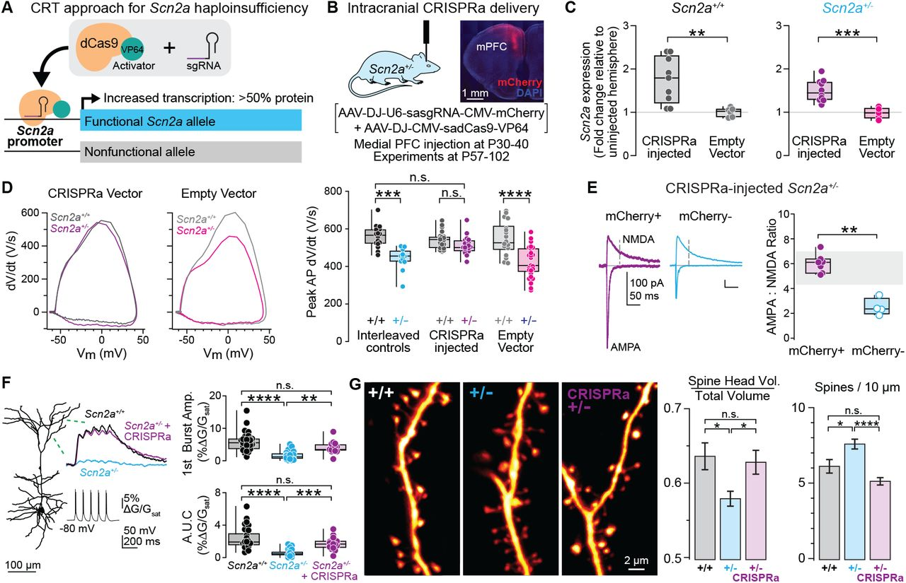
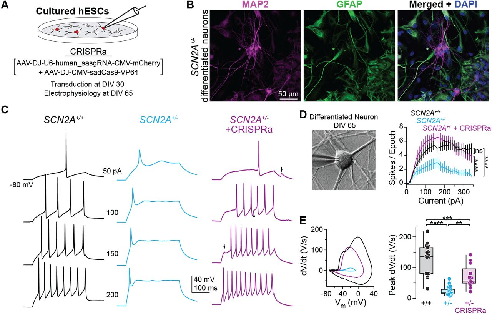

BSMS205 · Genetics
CRISPRa Therapy for
SCN2A Haploinsufficiency
Chapter 27 · A case study in cis-regulatory therapy
Today's central question
Can you treat a genetic disease
by simply turning up the volume
on the patient's normal allele?
The therapeutic concept
Don't replace the gene.
Don't edit the mutation.
Boost the remaining normal allele.
This is called dosage restoration therapy.
Roadmap
- SCN2A and the haploinsufficiency problem
- Loss vs gain of function variants
- How CRISPRa works · the mechanism
- The Tamura 2025 study · cellular rescue
- Behavioral and seizure rescue
- Why this matters · cis-regulatory therapy
§ 1
SCN2A and the
Haploinsufficiency Problem
SCN2A · a sodium channel
- Encodes NaV1.2 · voltage-gated sodium channel
- Critical for action potential generation
- Especially important in early brain development
- Highly expressed in excitatory neurons
Haploinsufficiency · one copy is not enough
Normal
- Two functional alleles
- 50% + 50% = 100% protein
- Neurons fire normally
Haploinsufficient
- One functional · one LoF
- 50% + 0% = 50% protein
- Neurons under-fire
Clinical consequences of SCN2A LoF
- Developmental delay
- Epilepsy — including paradoxical seizures
- Autism spectrum disorder
- Intellectual disability
The key insight
The remaining SCN2A allele is perfectly normal.
It just isn't producing enough protein.
Therapeutic question: can we make the good copy work harder?
§ 2
Not All Variants
Are the Same
Two opposite variant classes
| Class | Channel | Neuron | Phenotype |
|---|
| Loss of function | Reduced or absent | Hypoexcitable | Developmental delay · ASD |
| Gain of function | Excessive · prolonged opening | Hyperexcitable | Infantile spasms · early epilepsy |
Why the distinction matters for therapy
- LoF haploinsufficiency · neurons need more NaV1.2 → use CRISPRa
- GoF · neurons have too much activity → would need CRISPRi or sodium channel blocker
- Genetic diagnosis must distinguish the two classes
§ 3
How CRISPRa Works
Standard CRISPR · cuts DNA
- Guide RNA targets the protein
- Cas9 cuts both strands
- Cell repairs the break, often with errors
- Result: permanent DNA change
CRISPRa · activates without cutting
- dCas9 — catalytically dead · binds DNA but cannot cut
- Fused to activator domain (e.g. VPR = VP64 + p65 + Rta)
- Guide to gene's promoter → recruits transcription machinery
- More mRNA · more protein · DNA unchanged
The volume knob mental model
Standard CRISPR
- Permanent DNA edit
- Like rewriting the score
CRISPRa
- Reversible expression change
- Like turning up the volume
§ 4
The Tamura 2025 Study
Experimental design
- Generate Scn2a haploinsufficient mice (one WT + one LoF allele)
- Design CRISPRa: dCas9-VPR + guide RNA targeting Scn2a promoter
- Package into AAV9 · deliver systemically
- Treat adolescent mice (P30–P60)
- Measure: mRNA · sodium current · firing · seizures · behaviour
Tamura et al. 2025, Nature
Result 1 · expression restored

mRNA from ~50% (Het) → ~80–90% (Het + CRISPRa) of WT.
Sodium current from ~50% → ~85% of WT.
Tamura et al. 2022 bioRxiv. CC BY-NC-ND 4.0.
Result 2 · firing rescued

WT (black) fires many spikes · Het (cyan) fires few · Het+CRISPRa (purple) fires like WT.
Tamura et al. 2022 bioRxiv. CC BY-NC-ND 4.0.
§ 5
Behavior and Seizures
Result 3 · seizure protection

4-AP induced seizures · 60 min survival.
Het (cyan) ~40% survive · Het+CRISPRa (purple) ~WT survival.
Tamura et al. 2022 bioRxiv. CC BY-NC-ND 4.0.
Result 4 · behavioural improvement
- Synaptic transmission · restored in cortical pyramidal cells
- Social interaction · improved
- Overall phenotype · near-normal
- Treatment in adolescence · still works
Also tested in human cells
- Human iPSC-derived neurons with SCN2A LoF
- CRISPRa boosted SCN2A expression
- Sodium currents recovered
- Approach is not mouse-specific
§ 6
Why This Matters ·
Cis-Regulatory Therapy
Five advantages of CRISPRa therapy
- No DNA cutting — no risk of off-target indels or rearrangements
- Endogenous regulation — gene stays under native promoter and enhancers
- Tunable and reversible — adjust dose · stop if needed
- Mutation-agnostic — works for any LoF as long as one allele is intact
- Late intervention possible — adolescent mice still rescued
How CRISPRa compares to alternatives
| Strategy | What it does | Trade-off |
|---|
| Gene replacement | Add a new SCN2A copy via AAV | SCN2A is too large for AAV (6 kb) |
| Base editing | Correct point mutations | Only works for specific mutation types |
| Small molecules | Modulate channel activity | Non-specific · affects all Na channels |
| CRISPRa | Boost normal allele | Requires viral delivery · long-term safety TBD |
The bigger picture · cis-regulatory gene therapy
- SCN1A in Dravet syndrome · CRISPRa development active
- SIM1 in obesity from haploinsufficiency · CRISPRa works in mice
- HTT in Huntington's · CRISPRi to silence repeat expansion
- Hundreds of haploinsufficiency disorders are candidates
What to take away
- SCN2A LoF causes haploinsufficiency · neurons under-fire
- The remaining allele is perfectly normal · just under-expressed
- CRISPRa = dCas9 + activator → boost expression without cutting
- Tamura 2025 · cellular firing, sodium current, seizures, behaviour all rescued
- Works in adolescent mice and in human iPSC neurons
- Foundational case for cis-regulatory gene therapy
Next lecture
How does gene regulation
actually work?
Chapter 28 · Gene Regulation — Same Book, Different Readings